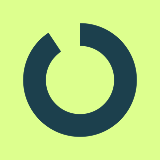
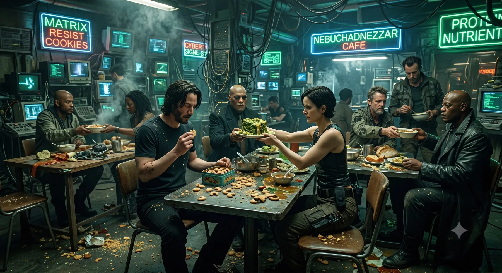
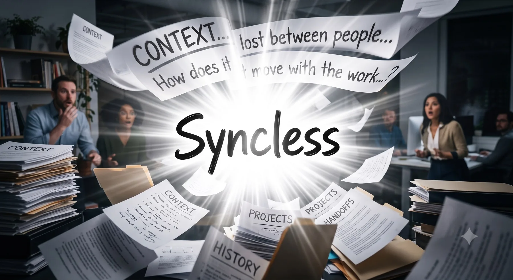

Book a DemoNot personally.
Your team.
You adopted every AI tool on the market.
Output went up.
Alignment got worse.
You explained it. They fed it to a coding agent. You're still cleaning up.
You laid it out clearly. The goal, the constraints, what good looks like.
They nodded. Then they opened their coding agent.
The PR came back three days later.
It compiled. It passed CI. It wasn't what you meant at all.
You spent the next week in review comments trying to explain
what you should have only had to say once.
The numbers behind the discomfort
A five-country survey of 247 managers. What the hours actually add up to.
86% of managers already use AI at work. The heaviest daily users carry more than twice the coordination load of non-users. AI made you faster at producing more material for everyone else to reconcile.
Coordination Tax Index 2026 · In Parallel · 247 managers, 5 countries
Also: 91% of AI users reload context manually every session. Only 9% say their assistant "usually knows enough." — same study.

Root cause diagnosis
Every meeting, every PR, every decision — the reasoning behind it stays in someone's head. The next person starts from scratch. AI made output faster; it made this gap worse, not better. A faster engine on a stale map.
"The AI cannot reduce coordination overhead because the coordination layer is exactly the part of the organisation it cannot see."
— Coordination Tax Index 2026 · In ParallelSo, how do we fix it?

The other side
No more "can you explain this?" · No more re-briefing rituals · Just the work, and the people.
How Syncless fixes this
Syncless is the collaboration layer where agents and humans work the same queue — every task carries the full context of prior decisions, nobody reconstructs from scratch.
Three things Syncless gives your team
Task arrives. The pipeline decides — routes to the right owner with every prior decision attached.
Agents and humans see the same prior decisions, files, and the exact next question — nobody starts from zero.
Turn your team's implicit SOPs into reusable, context-aware templates anyone can start.
Syncless agents don't carry a separate Syncless-owned identity. They run using the credentials already on your device — no third-party account observing your team, no data leaving through a foreign identity, and nothing that could become a surveillance layer. The agent acts as you, with your permissions, inside your toolchain.
Connect your team to Syncless. 30 min and the gap becomes visible — and fixable.